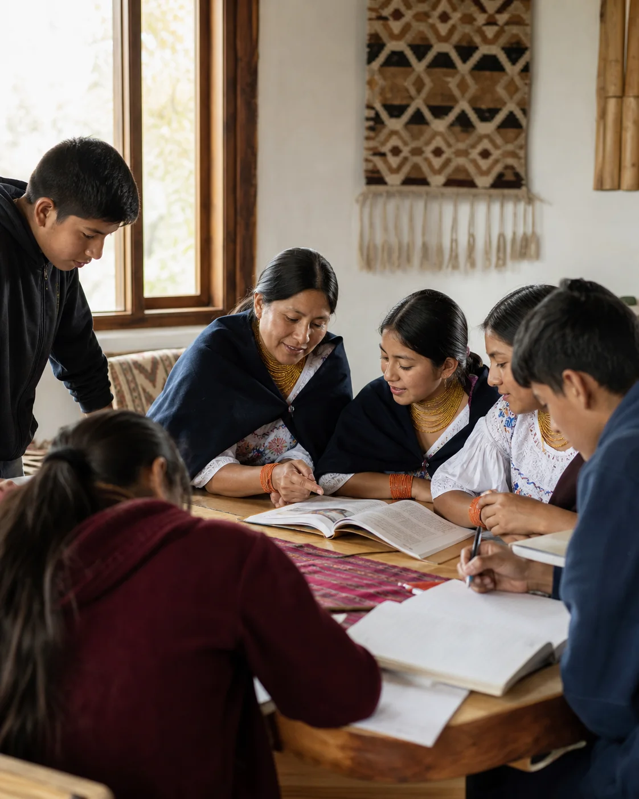
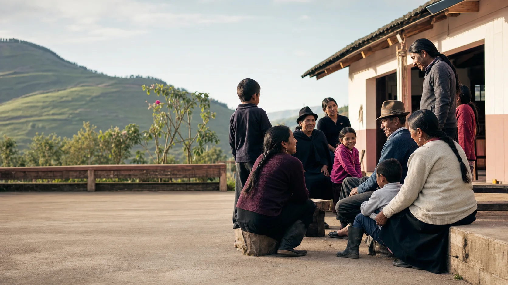
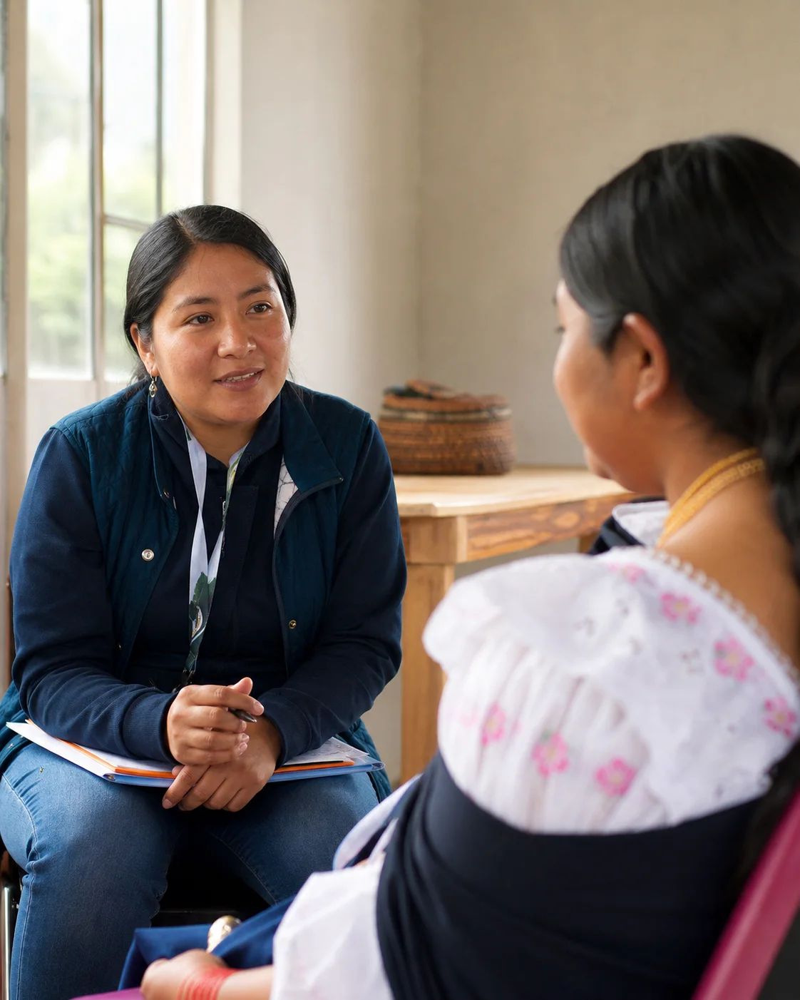
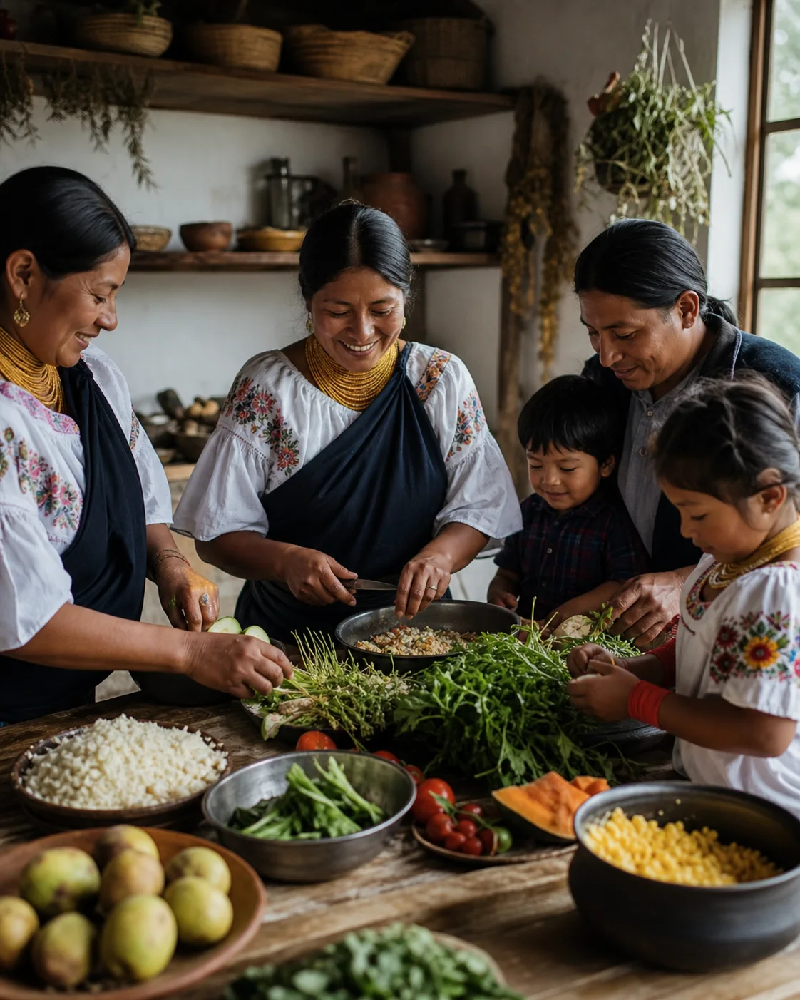
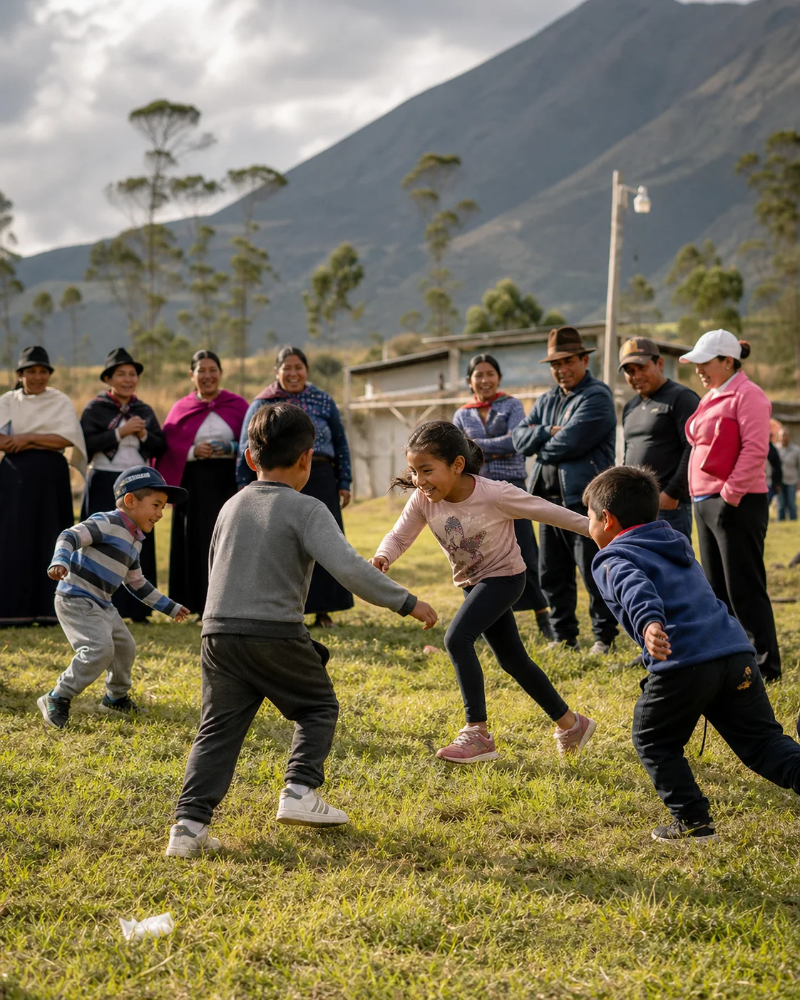
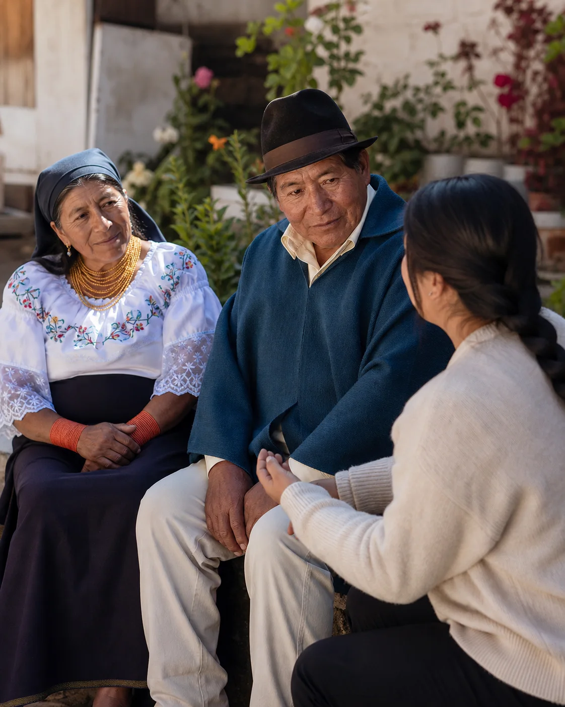

01 / Educación
Aprender abre caminos.
Acompañamiento educativo, continuidad escolar y espacios de aprendizaje que puedan ampliar oportunidades para niñas, niños y jóvenes.

San Juan de Ilumán · Otavalo · Ecuador
Impulsamos una visión de asistencia social y solidaridad para acompañar a niñas, niños, familias y adultos mayores con educación, salud, nutrición y espacios de encuentro.
01 / Nuestra misión
La Corporación Indígena Rumiñahui busca fortalecer el bienestar de la población indígena mediante programas de asistencia social cercanos, respetuosos y sostenidos, sin dejar atrás su identidad cultural ni la voz de la propia comunidad.
Desde San Juan de Ilumán02 / Líneas de acción
Estas son las áreas sociales que la Corporación busca desarrollar y fortalecer junto a la comunidad y sus aliados.

Acompañamiento educativo, continuidad escolar y espacios de aprendizaje que puedan ampliar oportunidades para niñas, niños y jóvenes.

Orientación, jornadas comunitarias y conexiones con servicios que ayuden a cuidar la salud física y emocional de las familias.

Acciones de nutrición y apoyo alimentario que valoren los productos locales, la salud y los saberes de cada familia.

Actividades culturales, deportivas y familiares que fortalezcan vínculos, bienestar y participación entre generaciones.

Cercanía, escucha y redes de apoyo para que las personas mayores se mantengan activas, valoradas y acompañadas por su comunidad.
03 / Trayectoria documentada
La página institucional registra proyectos realizados con el esfuerzo de sus fundadores y el apoyo de entidades de Ecuador, Suiza, España y otros aliados.
04 / Campaña activa
La campaña oficial en GoFundMe busca reunir apoyo para familias indígenas de Ecuador. Cada aporte puede ayudar a convertir estas líneas de acción en acompañamiento concreto y sostenido.
Ir a la campaña oficial ↗ La donación se realiza de forma externa y segura en GoFundMe.05 / Contacto
Buscamos aliados que compartan una visión de acompañamiento permanente, solidaridad y respeto por la población indígena.
Escribir por WhatsApp ↗